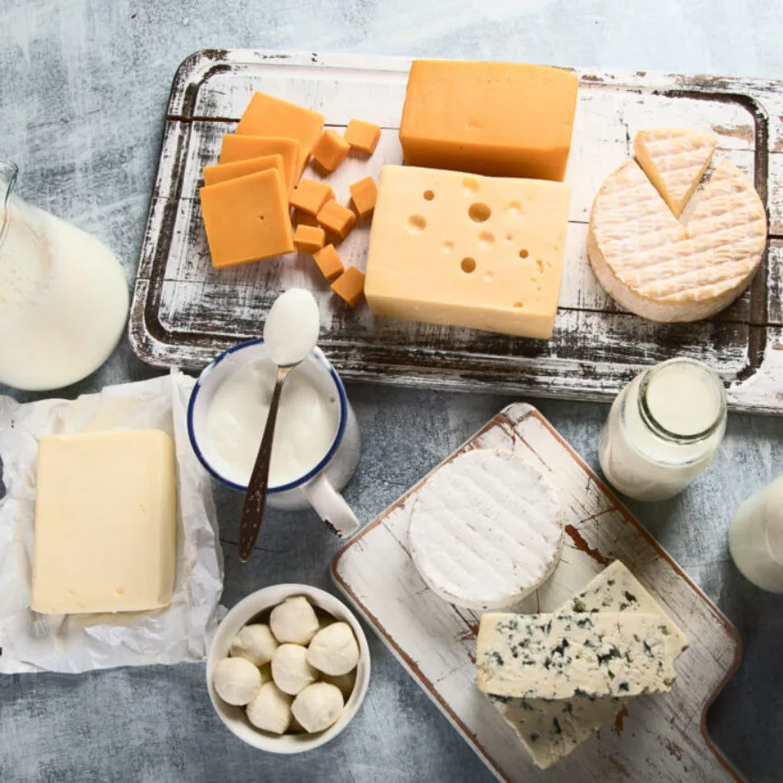
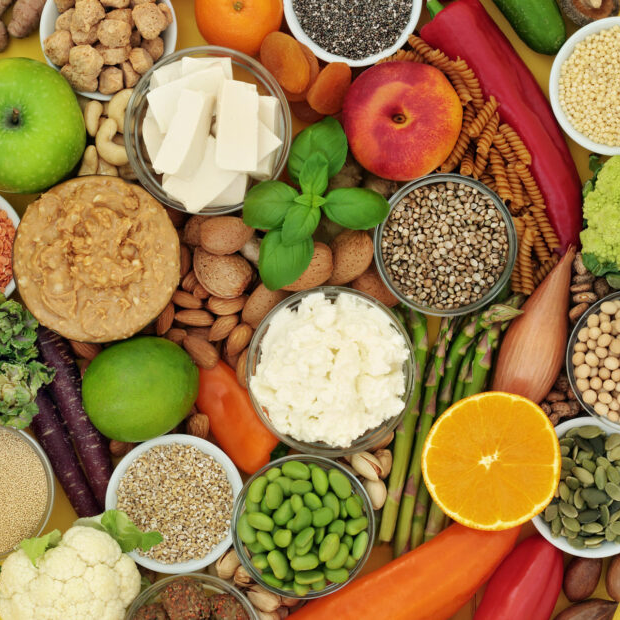

Puede ser que hayas querido seguir una receta pero no hayas podido porque no se ajusta a tus necesidades especiales.
Desde SweetStoves hemos creado este apartado para ayudar a nuestros usuarios a cambiar los ingredientes de las
recetas que les impiden disfrutarlas al máximo.
El gluten es una proteína que se encuentra en la semilla de muchos
cereales como son el trigo, cebada, centeno, espelta, algunas variedades de avena, así como sus
híbridos y derivados.
Obviamente, los productos elaborados con estos cereales o con derivados contienen gluten. Por tanto, se deben
buscar alternativas sin gluten de productos como el pan, las harinas, las pastas y el chocolate (a veces se
elabora con harina de trigo). Además, algunos productos pueden contener trazas de gluten. Esto significa que
pueden estar afectados por la contaminación cruzada, por lo que es mejor evitarlos.
Desde SweetStoves recomendamos utilizar harinas de otros cereales que no contengan gluten (como la harina
de maíz o la harina de yuca) y mirar el etiquetado de los alimentos para confirmar que los productos que
se vayan a utilizar no contengan gluten, ya sea por los ingredientes o por la presencia de trazas.
Para intolerantes a la lactosa...

La lactosa es un disacárido natural compuesto de glucosa y galactosa
que está presente en todas las leches de los mamíferos: vaca, cabra, oveja y en la humana.
Dicho esto, se deben buscar alternativas sin lactosa tanto de la leche como de sus derivados como la nata, los
quesos y la mantequilla. Hoy en día, se pueden encontrar muchos de estos productos en el mercado debido a los
métodos tecnológicos utilizados por la industria alimentaria para eliminar la lactosa de los productos lácteos.
Otra opción para sustituir los ingredientes que contienen lactosa son los productos de origen vegetal. Este puede
ser el caso de la mantequilla, la cual se puede cambiar por margarina, o por la propia leche, que se puede
reemplazar con cualquier bebida vegetal como puede ser la "leche" de almendras o la "leche" de soja.
Para vegan@s...

En este caso, se deben sustituir todos los ingredientes de origen animal, como son las carnes, pescados,
huevos y productos lácteos. Aquí puedes consultar algunos consejos para sustituir estos ingredientes:
Se pueden encontrar en las tiendas variantes veganas de algunas materias primas, como las bebidas vegetales
mencionadas en el apartado anterior o la carne vegetal.
Algunos ingredientes preparados con productos de origen animal tienen una opción vegana. Por ejemplo, puedes
encontrar chocolate o pan vegano. Si no los encuentras, siempre puedes recurrir a prepararlos tú mism@.
Otros ingredientes, como el huevo, no tienen una alternativa vegana. En estos casos, se debe buscar la función
del ingrediente a sustituir para elegir otro que pueda cumplirla. Usando el ejemplo previo, un huevo se puede
reemplazar por 65g de puré de manzana (puede usarse otro tipo de fruta) si se va a usar en repostería o por
una mezcla de harina y agua si se va a utilizar en rebozados o empanados.
Desde SweetStoves aconsejamos buscar recetas veganas en vez de adaptar nuestras
recetas para que lo sean ya que algunos cambios pueden ser muy significativos (os invitamos a compartir este
tipo de recetas con el resto de usuarios).